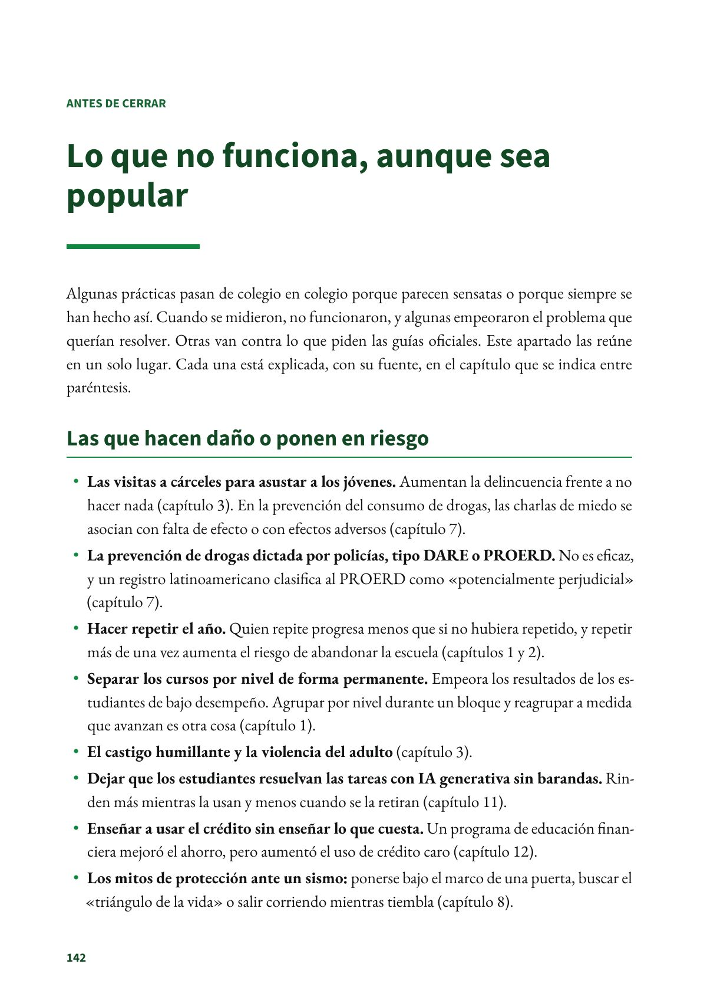
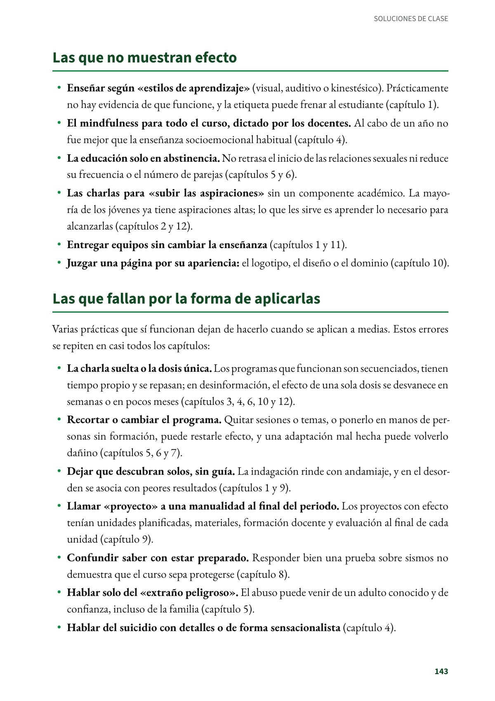
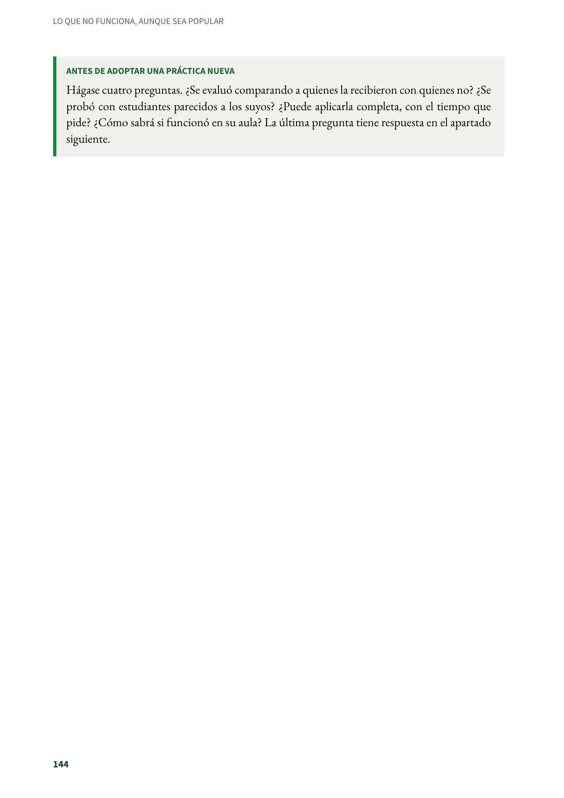

Lo que no funciona, aunque sea popular
Algunas prácticas pasan de colegio en colegio porque parecen sensatas o porque siempre se han hecho así.
PDF · 3 págs. · 52 KBAlgunas prácticas pasan de colegio en colegio porque parecen sensatas o porque siempre se han hecho así. Cuando se midieron, no funcionaron, y algunas empeoraron el problema que querían resolver. Otras van contra lo que piden las guías oficiales. Este apartado las reúne en un solo lugar. Cada una está explicada, con su fuente, en el capítulo que se indica entre paréntesis.
Las que hacen daño o ponen en riesgo
- Las visitas a cárceles para asustar a los jóvenes. Aumentan la delincuencia frente a no hacer nada (capítulo 3). En la prevención del consumo de drogas, las charlas de miedo se asocian con falta de efecto o con efectos adversos (capítulo 7).
- La prevención de drogas dictada por policías, tipo DARE o PROERD. No es eficaz, y un registro latinoamericano clasifica al PROERD como «potencialmente perjudicial» (capítulo 7).
- Hacer repetir el año. Quien repite progresa menos que si no hubiera repetido, y repetir más de una vez aumenta el riesgo de abandonar la escuela (capítulos 1 y 2).
- Separar los cursos por nivel de forma permanente. Empeora los resultados de los estudiantes de bajo desempeño. Agrupar por nivel durante un bloque y reagrupar a medida que avanzan es otra cosa (capítulo 1).
- El castigo humillante y la violencia del adulto (capítulo 3).
- Dejar que los estudiantes resuelvan las tareas con IA generativa sin barandas. Rinden más mientras la usan y menos cuando se la retiran (capítulo 11).
- Enseñar a usar el crédito sin enseñar lo que cuesta. Un programa de educación financiera mejoró el ahorro, pero aumentó el uso de crédito caro (capítulo 12).
- Los mitos de protección ante un sismo: ponerse bajo el marco de una puerta, buscar el «triángulo de la vida» o salir corriendo mientras tiembla (capítulo 8).
Las que no muestran efecto
- Enseñar según «estilos de aprendizaje» (visual, auditivo o kinestésico). Prácticamente no hay evidencia de que funcione, y la etiqueta puede frenar al estudiante (capítulo 1).
- El mindfulness para todo el curso, dictado por los docentes. Al cabo de un año no fue mejor que la enseñanza socioemocional habitual (capítulo 4).
- La educación solo en abstinencia. No retrasa el inicio de las relaciones sexuales ni reduce su frecuencia o el número de parejas (capítulos 5 y 6).
- Las charlas para «subir las aspiraciones» sin un componente académico. La mayoría de los jóvenes ya tiene aspiraciones altas; lo que les sirve es aprender lo necesario para alcanzarlas (capítulos 2 y 12).
- Entregar equipos sin cambiar la enseñanza (capítulos 1 y 11).
- Juzgar una página por su apariencia: el logotipo, el diseño o el dominio (capítulo 10).
Las que fallan por la forma de aplicarlas
Varias prácticas que sí funcionan dejan de hacerlo cuando se aplican a medias. Estos errores se repiten en casi todos los capítulos:
- La charla suelta o la dosis única. Los programas que funcionan son secuenciados, tienen tiempo propio y se repasan; en desinformación, el efecto de una sola dosis se desvanece en semanas o en pocos meses (capítulos 3, 4, 6, 10 y 12).
- Recortar o cambiar el programa. Quitar sesiones o temas, o ponerlo en manos de personas sin formación, puede restarle efecto, y una adaptación mal hecha puede volverlo dañino (capítulos 5, 6 y 7).
- Dejar que descubran solos, sin guía. La indagación rinde con andamiaje, y en el desorden se asocia con peores resultados (capítulos 1 y 9).
- Llamar «proyecto» a una manualidad al final del periodo. Los proyectos con efecto tenían unidades planificadas, materiales, formación docente y evaluación al final de cada unidad (capítulo 9).
- Confundir saber con estar preparado. Responder bien una prueba sobre sismos no demuestra que el curso sepa protegerse (capítulo 8).
- Hablar solo del «extraño peligroso». El abuso puede venir de un adulto conocido y de confianza, incluso de la familia (capítulo 5).
- Hablar del suicidio con detalles o de forma sensacionalista (capítulo 4).
Antes de adoptar una práctica nueva
Hágase cuatro preguntas. ¿Se evaluó comparando a quienes la recibieron con quienes no? ¿Se probó con estudiantes parecidos a los suyos? ¿Puede aplicarla completa, con el tiempo que pide? ¿Cómo sabrá si funcionó en su aula? La última pregunta tiene respuesta en el apartado siguiente.
Así se ve en el libro
3 páginas

